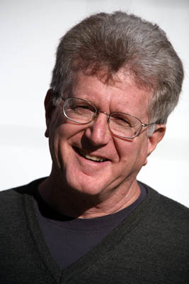
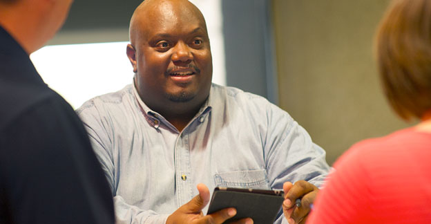

Short pitch A web experience showcases Anh’s professional experience and side projects to help visitors, especially recruiters, understand and determine his skill set.
Long pitch anhphapnguyen.com will focus on sharing Anh’s portfolio to establish his personal brand and highlighting his accomplishments. Anh’s personal website will showcase projects that he has worked on in his free time as well as in Hackathon weekends. Anh believes his personal website is a good way not only to show his accomplishments and skills in computations but also attract recruiters and networking opportunities.
Business Owner: Charles M. Chin

Short description:
Charles run his own business where he provides cleaning services to house and bigger facilities. He had a website that was built in 2000 and looks outdated. He would like to find someone who can redesign his website for a reasonable price.
Long description:
Charles prefers to work with someone who he can personally interact with and is knowledgable about modern web development because he would like to give his website a brand new look, in which he believes can draw more customer’s attention.
Anh-portfolio is Anh’s personal website that was built as one of his side projects. Anh’s personal website demonstrates a great understanding of modern web design in which he’s learned in MI 349 class at Michigan State University. With Anh’s design skills and the independence he has as a college student, he can help Charles redesign his business website.
Technical Director at Humana: David B. Osborne
Short description:
David Horton is a technical director at Humana for more than 5 years and he’s looking for IT interns for next summer who can demonstrate their passion in software and database development.
Long description:
At humana, data development plays an important role in all of their technical development areas. That’s why David is considering those who have database experience as a plus. Since Humana is a health insurance provider, having experience with working patient information will stand out.
Anh-portfolio is Anh Nguyen’s personal website who is a Junior student at Michigan State University pursuing a degree in computer science. His website can help David know more about Anh’s ability in software and database development given that Anh is working in a related-industry as his part-time job.
USAA Recruiter: Thomas S. Duffield

Short description:
Thomas is a technical recruiter at USAA looking for web development interns to fill the web development team who can demonstrate his web development skills through a personal portfolio and have some backgrounds in software development.
Long description:
Thomas has been working at USAA as a technical recruiter for several years and he’s always wanted to look for people who are passionate about what they’re doing because he thinks the only way a job is well performed is only if people are passionate and enjoying what they do. When it comes to hiring, Thomas usually look for proofs from candidate that shows his ability and interest in technology, specifically in web development.
Anh-portfolio is a website that belongs to Anh Nguyen, who is a junior Computer Science student at Michigan State University looking for an internship. Anh has built a website to demonstrate his ability and skills in web development in which could help Thomas to determine whether or not Anh would be a good fit in his development team. Anh’s personal website shows his side projects as well as weekend or Hackathon projects that were developed using different programming languages such as Java, C#, and Ruby. Using this website provided information, Thomas, the recruiter, can contact Anh to discuss further opportunity at USAA.
http://www.hmajoros.com/
http://cassidoo.co/
http://www.caitlinamcdonald.com/